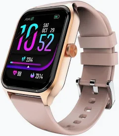
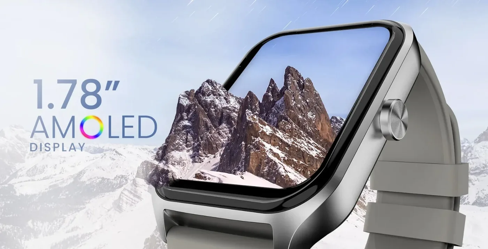
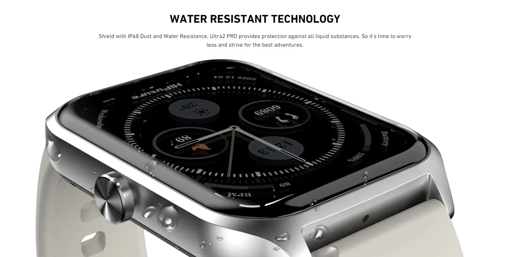
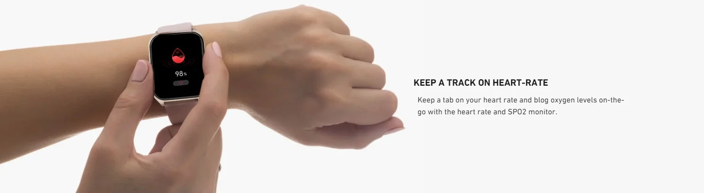
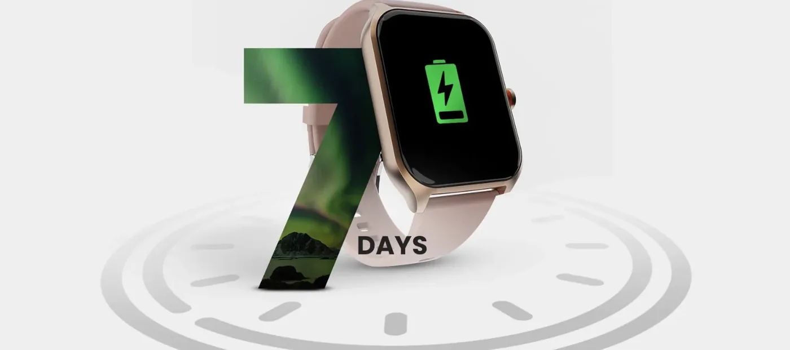
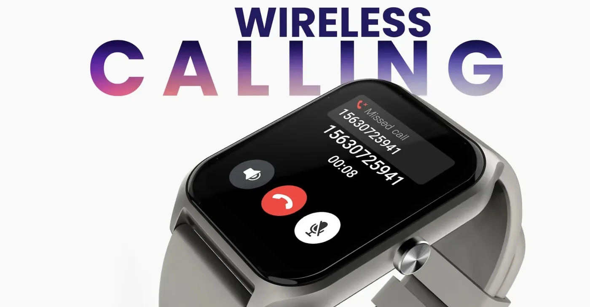
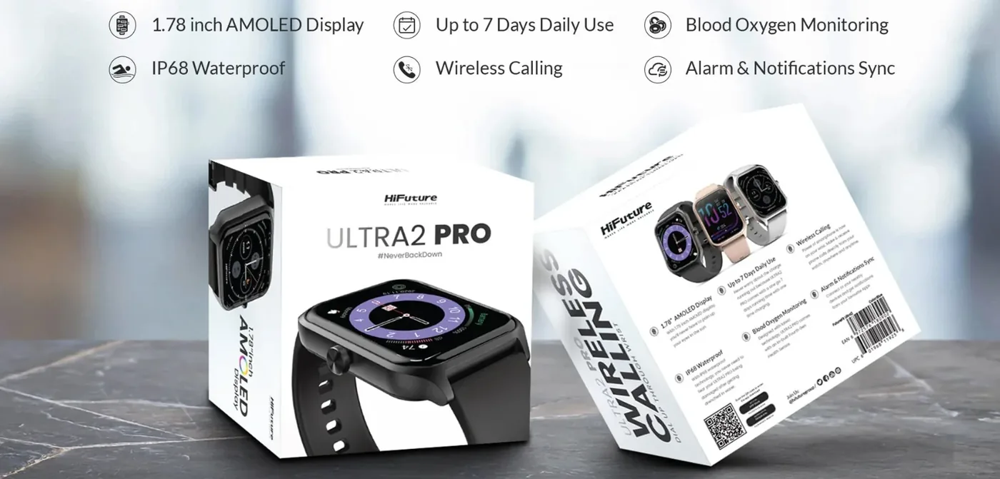

Gọi không dây chỉ một chạm
Thực hiện cuộc gọi ngay từ cổ tay để trò chuyện với người thân dễ dàng. Lưu đến 10 liên hệ để kết nối nhanh khi cần.
HiFuture Ultra2 Pro
Đồng hồ thông minh cao cấp với màn hình AMOLED 1.78 inch, cảm biến nhịp tim và SpO2, chống nước IP68. Kết nối Bluetooth 5.2 ổn định.

Số liệu trên hình chỉ mang tính minh họa.
Đồng Hồ Thông Minh HiFuture Ultra2 Pro là một sản phẩm độc đáo và tiện ích, được thiết kế để mang đến cho người dùng những tính năng thông minh và công nghệ hàng đầu để nắm bắt sức khỏe và cải thiện lối sống. Với khả năng chống nước IP68, màn hình AMOLED 1.78 inch, đo SpO2, thời lượng pin lên đến 7 ngày và tính năng gọi không dây, HiFuture Ultra2 Pro là một lựa chọn tuyệt vời cho những người muốn trang bị một chiếc đồng hồ thông minh và đa chức năng.
Màn hình AMOLED kích thước 1.78 inch của HiFuture Ultra2 Pro mang lại trải nghiệm xem phim và xem thông tin tuyệt vời. Với màu sắc sống động, độ tương phản cao và góc nhìn rộng, màn hình này cho phép bạn hiển thị thông tin chi tiết và hình ảnh sắc nét. Bạn có thể tùy chỉnh giao diện đồng hồ và chọn từ nhiều kiểu hiển thị khác nhau để phù hợp với phong cách của riêng bạn.

Thực hiện cuộc gọi ngay từ cổ tay để trò chuyện với người thân dễ dàng. Lưu đến 10 liên hệ để kết nối nhanh khi cần.
Dùng liên tục đến 7 ngày, bạn không bỏ lỡ thông báo quan trọng và không phải sạc thường xuyên.
Tự tin mang theo khi đi bơi, chạy bộ hay chơi thể thao ngoài trời, không lo nước, mồ hôi hay bụi bẩn.
Màu sống động, độ tương phản cao, góc nhìn rộng. Chọn nhiều kiểu hiển thị để hợp với phong cách của bạn.
Bluetooth 5.2 cho phép kết nối nhiều thiết bị với đồng hồ để đồng bộ và nhận dữ liệu hoạt động hằng ngày chính xác.
Khả năng chống nước IP68 của HiFuture Ultra2 Pro giúp bạn tự tin sử dụng đồng hồ trong mọi hoạt động hàng ngày mà không cần lo lắng về nước, mồ hôi hoặc bụi bẩn. Bạn có thể mang theo đồng hồ khi bạn đi bơi, chạy bộ hoặc tham gia các hoạt động thể thao khác mà không cần lo lắng về việc hỏng hóc. Điều này đặc biệt hữu ích cho những người yêu thích ngoài trời và cuộc sống hoạt động.

Tính năng đo SpO2 của HiFuture Ultra2 Pro cho phép bạn theo dõi mức oxy trong máu. Điều này cung cấp thông tin quan trọng về sức khỏe của bạn và giúp bạn hiểu rõ hơn về cường độ hoạt động và mức độ thể lực của mình. Bạn có thể sử dụng tính năng này để theo dõi sự thay đổi trong mức oxy trong máu và điều chỉnh hoạt động của mình một cách phù hợp.

HiFuture Ultra2 Pro cũng có thời lượng pin lâu dài, cho phép bạn sử dụng đồng hồ trong thời gian dài mà không cần sạc lại. Với thời lượng pin lên đến 7 ngày, bạn có thể hoạt động và theo dõi sức khỏe của mình mà không cần lo lắng về việc sạc pin thường xuyên. Điều này rất tiện lợi và đảm bảo rằng bạn không bỏ lỡ bất kỳ thông báo quan trọng nào.

Thực hiện và nhận cuộc gọi ngay từ cổ tay để trò chuyện với người thân dễ dàng. Đồng hồ cho phép lưu đến 10 liên hệ để kết nối nhanh khi cần.

Sáu điểm nổi bật của HiFuture Ultra2 Pro: màn hình AMOLED 1.78 inch, dùng đến 7 ngày, đo oxy trong máu, chống nước IP68, gọi không dây, đồng bộ báo thức và thông báo.

Có. Ultra2 Pro hỗ trợ gọi không dây qua Bluetooth và lưu đến 10 liên hệ để gọi nhanh.
Được. Đồng hồ đạt chuẩn IP68 chống nước và bụi, phù hợp khi đi bơi, chạy bộ hoặc chơi thể thao.
Pin dùng liên tục đến 7 ngày.
Ba màu: Đen, Xám và Vàng hồng.
Gọi điện, theo dõi sức khỏe và dùng liền 7 ngày trong thiết kế gọn nhẹ. Có ba màu Đen, Xám và Vàng hồng.